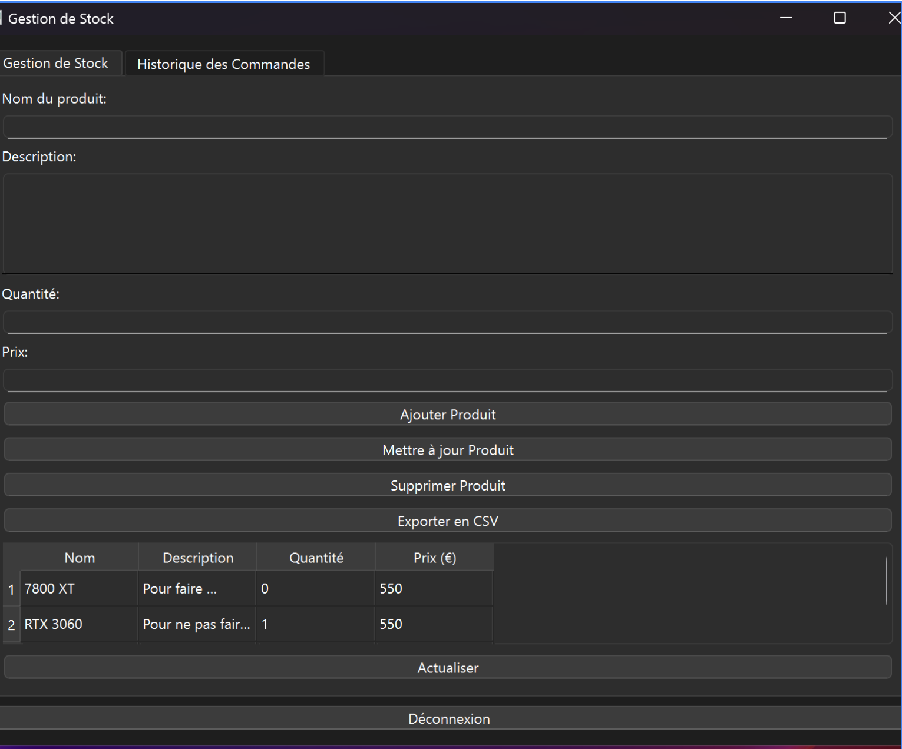

Dans le cadre de ma formation en BTS Services Informatiques aux Organisations (BTS SIO), j’ai eu l’opportunité de réaliser plusieurs projets concrets, à la fois en autonomie et en équipe. Ces projets m’ont permis de mettre en pratique les compétences techniques acquises en cours, que ce soit dans le développement d’applications, l’administration de réseaux, ou encore la gestion de bases de données. Chaque projet m’a permis de développer mon sens de l’analyse, ma rigueur et mes capacités à résoudre des problèmes techniques en conditions réelles.
Projet de développement d'une application de Gestion de stock
Dans le cadre du cours de développement du BTS SIO, nous avons réalisé une application de gestion de stock. Ce projet comprenait la mise en place d’un système d’inscription et de connexion sécurisé, permettant aux utilisateurs d’accéder à l’application selon leur profil. L’objectif était de gérer les produits en stock, avec des fonctionnalités comme l’ajout, la modification et la suppression d’articles, tout en assurant une interface simple et fonctionnelle.
Prérequis :
Python
VS Code
Base de données
Procédure Technique :
Étape 1
Environnement
Préparation du poste de travail :
- Installation de l'interpréteur Python.
- Création de l'arborescence du projet.
Étape 2
Structure & BDD
Initialisation des fichiers et données :
- Fichiers :
Stock.py,Inscription,Connexion. - Création de la base de données SQL "stock".
Étape 3
Authentification
Sécurisation de l'accès à l'application :
- Module d'inscription (User + MDP).
- Vérification des identifiants (Login).
- Stockage en base de données.
Étape 4
Fonctions Backend
Développement du coeur de l'application (CRUD) :
- Ajouter un produit (Nom, Qté, Prix).
- Modifier ou Supprimer un article.
- Lister le stock complet.
Étape 5
Logique Utilisateur
Gestion de l'expérience utilisateur :
- Menu conditionnel (Connexion requise).
- Actions disponibles selon le profil.
- Sauvegarde persistante des données.
Étape 6
Améliorations
Finalisation du projet :
- Interface graphique (GUI) avec Tkinter.
- Fonctionnalité d'export en CSV.
Rendu final

Figure 1 : Interface de connexion
Figure 2 : Interface principale de gestion de stock